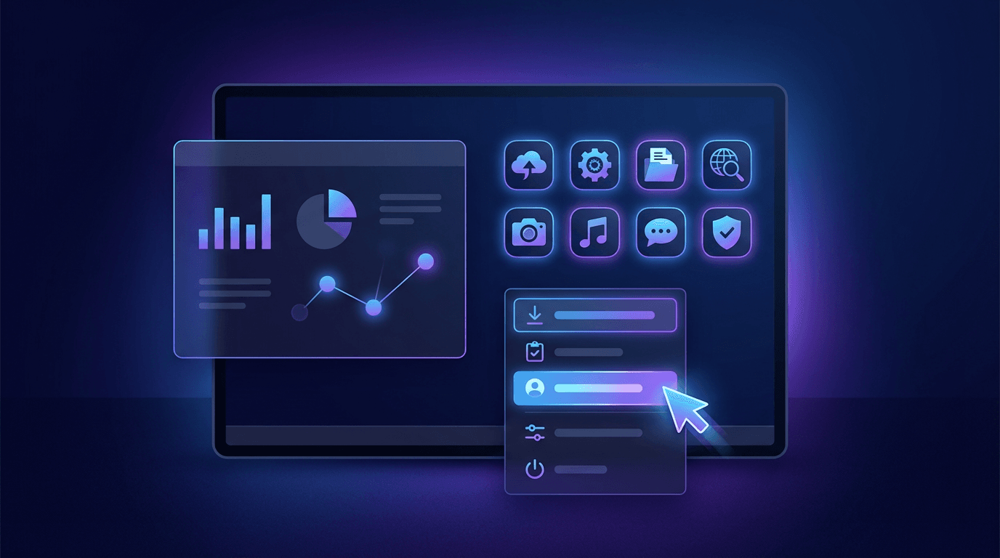

Interface Gráfica do Usuário (GUI)

O que é?
A Interface Gráfica do Usuário (GUI) permite que as pessoas interajam com sistemas por meio de elementos visuais, como janelas, botões, menus, ícones e ponteiros. Esse modelo tornou os computadores mais intuitivos e acessíveis para usuários sem conhecimentos técnicos avançados.
Principais características
- Uso de ícones e elementos gráficos.
- Interação por mouse, teclado ou toque.
- Janelas e menus organizados visualmente.
- Feedback visual durante as ações do usuário.
Vantagens
- Facilidade de aprendizagem.
- Maior usabilidade.
- Redução de erros na interação.
- Experiência mais intuitiva para iniciantes.
Desvantagens
- Maior consumo de memória e processamento.
- Desenvolvimento mais complexo.
- Pode ser menos eficiente para usuários experientes em tarefas repetitivas.
Exemplos de uso
- Microsoft Windows.
- macOS.
- Ubuntu Desktop.
- Android.
- iOS.
Aplicações
As interfaces gráficas são utilizadas em computadores pessoais, smartphones, tablets, caixas eletrônicos, sistemas bancários, softwares empresariais, navegadores web e diversas aplicações voltadas ao público em geral.
Resumo
A GUI revolucionou a interação humano-computador ao substituir comandos exclusivamente textuais por elementos gráficos. Atualmente, continua sendo o padrão predominante em dispositivos digitais devido à facilidade de uso, à boa experiência do usuário e à ampla aceitação entre diferentes perfis de usuários.